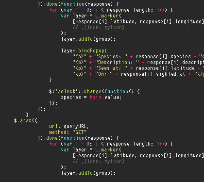
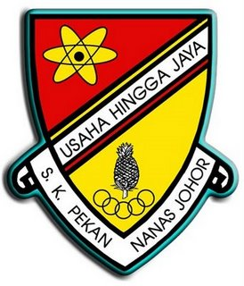
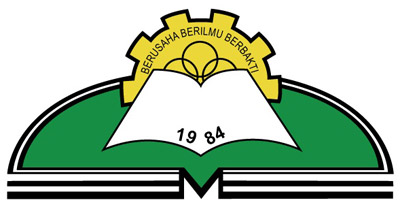

Educational Background
| Degree | Institution | Years Attended |
|---|---|---|
| Diploma in Information Management | Universiti Teknologi MARA (UiTM) | 2022 - Present |
| SPM | SMK Dato' Mohd Yunos Sulaiman | 2017 - 2021 |
Favorite Subjects

Science
Dive into the mysteries of biology, chemistry, and physics to better understand the world and universe.
Geography
Discover the intricate balance of Earth's landscapes, cultures, and natural processes.
Web Development
Learn to create engaging and responsive websites to bring ideas to life online.

Programming
Master coding and problem-solving through programming languages like Python, Java, and more.
My Educational Journey
-
2009 - 2010: Tadika Agama Johor - My kindergarten journey began here, where I developed early social and learning skills.2011 - 2016: Sekolah Kebangsaan Pekan Nanas - Primary school, where I built my foundation in academics and explored extracurricular activities.2017 - 2022: Sekolah Menegah Kebangsaan Dato' Mohd Yunos Sulaiman -Secondary school, where I nurtured my interest in technology and leadership roles.
 2022 - Present: Universiti Teknologi MARA (UiTM) Johor - Pursuing a Diploma in Information Management, focusing on advanced technology and data handling skills.
2022 - Present: Universiti Teknologi MARA (UiTM) Johor - Pursuing a Diploma in Information Management, focusing on advanced technology and data handling skills.Achievements
Dean List Johor Young Artist Award Encouragement Awards for Academic Student Leader Board